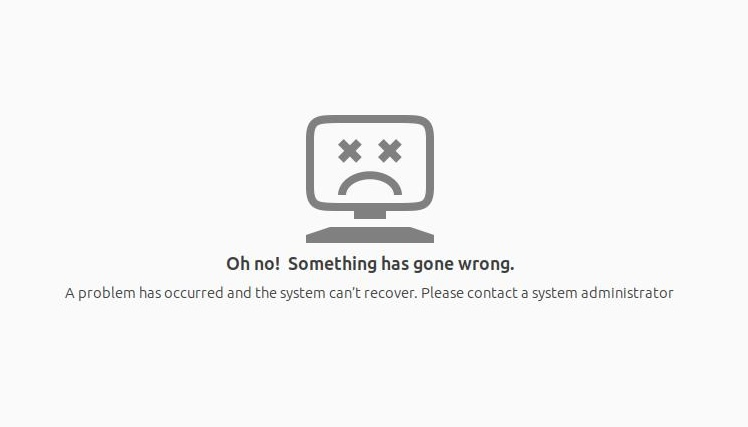

Touchpad Cannot Use for Ubuntu 24.04 on Thinkbook 16+ Solution
Linux
CN-blogs
触控板用不了的解决方案
1 Synaptics 配置文件
在 Thinkbook 16+ 2025 上装好 Ubuntu 24.04 后会发现触控板只有右键能用, 不是驱动的问题, 在设置里配置也没有用, 先看看触控板设备的 id 是多少:
xinput list输出类似:
⎡ Virtual core pointer id=2 [master pointer (3)]
⎜ ↳ Virtual core XTEST pointer id=4 [slave pointer (2)]
⎜ ↳ Logitech G304 id=8 [slave pointer (2)]
⎜ ↳ GXTP5100:00 27C6:01E9 id=9 [slave pointer (2)]
⎜ ↳ GXTP5100:00 27C6:01E9 id=10 [slave pointer (2)]
⎣ Virtual core keyboard id=3 [master keyboard (2)]
↳ Virtual core XTEST keyboard id=5 [slave keyboard (3)]
↳ Video Bus id=6 [slave keyboard (3)]
↳ Power Button id=7 [slave keyboard (3)]
↳ Ideapad extra buttons id=11 [slave keyboard (3)]
↳ Intel HID events id=12 [slave keyboard (3)]
↳ Intel HID 5 button array id=13 [slave keyboard (3)]
↳ AT Translated Set 2 keyboard id=14 [slave keyboard (3)]
↳ Logitech G304 id=15 [slave keyboard (3)]找到触控板 (例如 GXTP5100:00 27C6:01E9), 然后查看它的属性:
xinput list-props "GXTP5100:00 27C6:01E9" | grep -E "(Tapping|Natural|Scrolling|Accel|Click)"若有多个触控板设备, 则提示:
Warning: There are multiple devices matching 'GXTP5100:00 27C6:01E9'.
To ensure the correct one is selected, please use the device ID, or prefix the
device name with 'pointer:' or 'keyboard:' as appropriate.
unable to find device GXTP5100:00 27C6:01E9可以分别查看他们的属性 (记得把 id 换成你自己的):
xinput list-props 9 # id = 9
xinput list-props 10 # id = 10选一个改变其参数, 然后试试触控板能不能用, 比如改 id = 10 的属性:
xinput set-prop 10 "Synaptics Finger" 0 0 0 # 设置触控板压力灵敏度为超轻触, 改完了试试这里顺带也改了触控板的方向吧, 不然是反着的:
xinput set-prop 10 "Synaptics Scrolling Distance" -300 -300 # 设置自然/反向滚动 (速度较慢)但是这样改完了重启电脑后会自动消失, 需要加个配置文件才能永久:
sudo mkdir -p /etc/X11/xorg.conf.d建立文件 /etc/X11/xorg.conf.d/70-synaptics-touchpad.conf, 加入 (我也顺带改了光标移动速度和 scroll 速度):
70-synaptics-touchpad.conf
Section "InputClass"
Identifier "touchpad"
Driver "synaptics"
MatchIsTouchpad "on"
MatchDevicePath "/dev/input/event*"
# Enable tapping
Option "TapButton1" "1"
Option "TapButton2" "3"
Option "TapButton3" "2"
# Set finger pressure sensitivity (ultra light touch)
Option "FingerLow" "0"
Option "FingerHigh" "0"
# Enable natural/reverse scrolling (slower speed)
Option "VertScrollDelta" "-300"
Option "HorizScrollDelta" "-300"
# Enable two-finger scrolling
Option "VertTwoFingerScroll" "1"
Option "HorizTwoFingerScroll" "1"
# Disable edge scrolling (prefer two-finger)
Option "VertEdgeScroll" "0"
Option "HorizEdgeScroll" "0"
# Enable palm detection
Option "PalmDetect" "1"
Option "PalmMinWidth" "10"
Option "PalmMinZ" "200"
# Mouse movement speed settings
Option "MinSpeed" "1.5"
Option "MaxSpeed" "2.5"
Option "AccelFactor" "0.042817"
Option "ConstantDeceleration" "1.5"
EndSection各参数作用可自行了解修改.
使其生效:
sudo chmod 644 /etc/X11/xorg.conf.d/70-synaptics-touchpad.conf
sudo systemctl restart gdm3 # 或者重启电脑2 Optional: 安装 libinput10
libinput10 可以让你用 Mac 手势控制电脑. 参考 libinput 官方说明
注意: 不要按 这里 直接下载编译好的文件, 请自行源码编译! 如果搞爆了, 按 Section 2.2 的方法修复.
2.1 开启 SSH
由于操作可能会导致 GNOME 桌面环境崩溃, 先确保 SSH 已经开启, 以便后续可以远程操作:
sudo apt update
sudo apt install openssh-server
sudo systemctl status ssh # check if SSH is running, if not, start it:
sudo systemctl start ssh # If use `sudo systemctl enable ssh`, SSH will start automatically on boot获取 IP:
hostname -I2.2 恢复方法
如果:

别慌, 进入 TTY: Ctrl + Alt + F3 (或 F4/F5), 输入用户名和密码登录 (如果你可以 SSH 上去也可以远程), 然后:
sudo apt-get update
sudo apt-get install --reinstall libinput10
# 删除你自己 cp 的错误文件（如果还在）
sudo rm -f /usr/lib/x86_64-linux-gnu/libinput.so.10.14.0
# 删除错误链接（如果它仍然指向 10.14.0）
sudo rm -f /usr/lib/x86_64-linux-gnu/libinput.so.10
# 手动建立正确的符号链接
sudo ln -s libinput.so.10.13.0 /usr/lib/x86_64-linux-gnu/libinput.so.10
# 刷新链接缓存
sudo ldconfig
ls -l /usr/lib/x86_64-linux-gnu/libinput.so.10* # 确认链接是否正确
sudo reboot